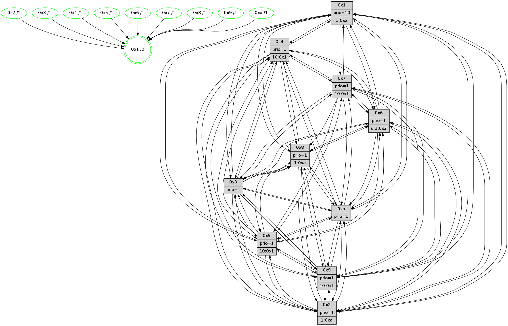

>> << IDX [start] -100 -25 -5 +0 +5 +25 +100 [1285.08207417]
 Previous packets
----------------------------------------------------------------------
1280.353289 beacon01(faad) #0 coord=01,02,03,04,05,06,07,0a,09,08 cycle=688.0ms assoc
-- color-indic=1 64 30 e2
1280.363273 beacon02(faad) #0 coord=01,02,03,04,05,06,07,0a,09,08 cycle=688.0ms assoc 64 a3 d3
1280.373272 beacon03(faad) #0 coord=01,02,03,04,05,06,07,0a,09,08 cycle=688.0ms assoc 64 d9 9e
1280.383272 beacon04(faad) #0 coord=01,02,03,04,05,06,07,0a,09,08 cycle=688.0ms assoc 64 ae 74
1280.393272 beacon05(faad) #0 coord=01,02,03,04,05,06,07,0a,09,08 cycle=688.0ms assoc 64 d4 39
1280.403273 beacon06(faad) #0 coord=01,02,03,04,05,06,07,0a,09,08 cycle=688.0ms assoc 64 5a ee
1280.413274 beacon07(faad) #0 coord=01,02,03,04,05,06,07,0a,09,08 cycle=688.0ms assoc 64 20 a3
1280.423278 beacon0a(faad) #0 coord=01,02,03,04,05,06,07,0a,09,08 cycle=688.0ms assoc 64 51 a8
1280.433277 beacon09(faad) #0 coord=01,02,03,04,05,06,07,0a,09,08 cycle=688.0ms assoc 64 df 7f
1280.443279 beacon08(faad) #0 coord=01,02,03,04,05,06,07,0a,09,08 cycle=688.0ms assoc 64 a5 32
1280.454218 [Hello(1): seq=726 sym=4,2,9,5,10,3,8,6,7 sysInfo=coloring-mode-on,ColoringModeRequestCalled stat=4:0,11,9,1/2:5,15,2,4/9:6,15,8,1/5:2,3,10,8/10:13,6,5,7/3:13,5,2,10/8:9,3,6,1/6:5,4,3,15/7:6,2,12,0]
1280.459000 [Color(10) seq=406 @0:0 prio=1]
1280.464806 [Color(6) seq=449 @0:0 prio=1 >>1.@2,1.@3,1.@4]
1280.469162 [Hello(2): seq=813 sym=4,5,7,3,9,8,10,1 sysInfo=hasWarning stat=4:4,10,6,11/5:2,9,5,2/7:15,6,7,0/3:3,11,4,12/9:4,4,13,9/8:14,8,3,11/10:8,9,9,10/1:1,2,11,0]
1280.473141 [Hello(3): seq=817 sym=1,7,6,2,4,8,9,10,5 sysInfo=hasWarning stat=1:1,4,2,0/7:13,7,11,13/6:5,8,1,0/2:13,12,8,1/4:9,3,13,11/8:4,6,7,4/9:12,3,15,0/10:15,13,2,4/5:1,1,2,0]
1280.476613 [Color(3) seq=446 @0:0 prio=1]
1280.482826 [Color(2) seq=393 @0:0 prio=1 >1.@a]
----------------------------------------------------------------------
1281.141420 beacon01(faad) #0 coord=01,02,03,04,05,06,07,0a,09,08 cycle=688.0ms assoc
-- color-indic=1 64 8c e7
1281.151403 beacon02(faad) #0 coord=01,02,03,04,05,06,07,0a,09,08 cycle=688.0ms assoc 64 1f d6
1281.161403 beacon03(faad) #0 coord=01,02,03,04,05,06,07,0a,09,08 cycle=688.0ms assoc 64 65 9b
1281.171403 beacon04(faad) #0 coord=01,02,03,04,05,06,07,0a,09,08 cycle=688.0ms assoc 64 12 71
1281.181404 beacon05(faad) #0 coord=01,02,03,04,05,06,07,0a,09,08 cycle=688.0ms assoc 64 68 3c
1281.191404 beacon06(faad) #0 coord=01,02,03,04,05,06,07,0a,09,08 cycle=688.0ms assoc 64 e6 eb
1281.201404 beacon07(faad) #0 coord=01,02,03,04,05,06,07,0a,09,08 cycle=688.0ms assoc 64 9c a6
1281.211406 beacon0a(faad) #0 coord=01,02,03,04,05,06,07,0a,09,08 cycle=688.0ms assoc 64 ed ad
1281.221407 beacon09(faad) #0 coord=01,02,03,04,05,06,07,0a,09,08 cycle=688.0ms assoc 64 63 7a
1281.231408 beacon08(faad) #0 coord=01,02,03,04,05,06,07,0a,09,08 cycle=688.0ms assoc 64 19 37
1281.243257 [Hello(10): seq=750 sym=6,2,3,8,7,5,9,4,1 sysInfo=hasWarning stat=6:4,1,8,2/2:4,12,9,11/3:5,9,13,14/8:8,2,6,2/7:11,6,0,8/5:5,5,4,0/9:10,10,14,4/4:10,3,15,0/1:6,13,11,1]
1281.246409 [Hello(9): seq=761 sym=2,5,3,4,7,6,8,10,1 sysInfo=hasWarning stat=2:5,8,6,10/5:0,0,9,7/3:7,14,0,3/4:12,14,10,0/7:15,2,13,3/6:1,2,5,12/8:11,3,10,4/10:7,0,13,4/1:2,4,3,1]
1281.249503 [Hello(7): seq=817 sym=2,3,5,6,4,8,9,10,1 sysInfo=hasWarning stat=2:9,2,6,3/3:0,10,9,3/5:12,4,2,2/6:3,1,7,10/4:6,8,2,0/8:4,15,3,0/9:3,4,4,1/10:12,13,6,6/1:9,7,15,0]
1281.252226 [Hello(8): seq=761 sym=5,2,3,7,9,6,4,10,1 sysInfo=hasWarning stat=5:9,14,14,0/2:4,9,14,12/3:12,13,4,3/7:0,14,8,1/9:5,12,0,4/6:14,13,1,14/4:2,10,5,0/10:11,1,3,4/1:6,15,1,0]
1281.255055 [Color(8) seq=416 @0:0 prio=1 >1.@a]
1281.257890 [Color(7) seq=345 @0:0 prio=1 >10.@1,1.@5,1.@6,1.@8]
1281.259996 [Color(5) seq=380 @0:0 prio=1 >10.@1,1.@6,1.@7,1.@8]
1281.262369 [Color(1) seq=497 @0:0 prio=10 >1.@2,1.@3,1.@4,1.@5]
1281.263988 [Hello(4): seq=817 sym=5,7,6,2,3,9,8,10,1 asym= sysInfo= stat=5:3,0,11,1/7:1,4,1,1/6:3,8,15,13/2:10,13,7,0/3:1,2,2,14/9:8,5,5,1/8:3,12,6,1/10:11,10,6,14/1:1,11,1,1]
1281.267140 [Color(4) seq=356 @0:0 prio=1 >10.@1,1.@2,1.@3,1.@5]
----------------------------------------------------------------------
1281.929551 beacon01(faad) #0 coord=01,02,03,04,05,06,07,0a,09,08 cycle=688.0ms assoc
-- color-indic=1 64 b8 ff
1281.939534 beacon02(faad) #0 coord=01,02,03,04,05,06,07,0a,09,08 cycle=688.0ms assoc 64 2b ce
1281.949534 beacon03(faad) #0 coord=01,02,03,04,05,06,07,0a,09,08 cycle=688.0ms assoc 64 51 83
1281.959534 beacon04(faad) #0 coord=01,02,03,04,05,06,07,0a,09,08 cycle=688.0ms assoc 64 26 69
1281.969534 beacon05(faad) #0 coord=01,02,03,04,05,06,07,0a,09,08 cycle=688.0ms assoc 64 5c 24
1281.979535 beacon06(faad) #0 coord=01,02,03,04,05,06,07,0a,09,08 cycle=688.0ms assoc 64 d2 f3
1281.989535 beacon07(faad) #0 coord=01,02,03,04,05,06,07,0a,09,08 cycle=688.0ms assoc 64 a8 be
1281.999540 beacon0a(faad) #0 coord=01,02,03,04,05,06,07,0a,09,08 cycle=688.0ms assoc 64 d9 b5
1282.009539 beacon09(faad) #0 coord=01,02,03,04,05,06,07,0a,09,08 cycle=688.0ms assoc 64 57 62
1282.019540 beacon08(faad) #0 coord=01,02,03,04,05,06,07,0a,09,08 cycle=688.0ms assoc 64 2d 2f
1282.032038 [Hello(5): seq=818 sym=7,6,4,3,1,9,8,10,2 sysInfo=hasWarning stat=7:5,9,3,15/6:6,4,0,3/4:5,1,9,13/3:12,14,14,1/1:9,7,14,0/9:11,12,8,10/8:2,10,6,3/10:3,15,6,8/2:6,2,12,7]
1282.035061 [Hello(2): seq=814 sym=4,5,7,3,9,8,10,1 sysInfo=hasWarning stat=4:5,11,6,11/5:2,10,5,2/7:0,7,7,0/3:3,11,4,12/9:5,4,13,9/8:15,9,3,11/10:9,9,9,10/1:2,3,11,0]
1282.037580 [Color(9) seq=377 @0:0 prio=1 >10.@1,1.@5,1.@a]
1282.039826 [Color(2) seq=394 @0:0 prio=1 >1.@a]
1282.042207 [Hello(6): seq=818 sym=2,3,5,4,7,9,8,10,1 sysInfo=hasWarning stat=2:0,3,0,0/3:7,9,2,1/5:5,4,10,3/4:3,13,10,6/7:13,9,4,14/9:0,6,2,10/8:13,0,14,5/10:9,12,11,12/1:1,0,2,1]
1282.045247 [Hello(3): seq=818 sym=1,7,6,2,4,8,9,10,5 sysInfo=hasWarning stat=1:2,5,2,0/7:14,8,11,13/6:5,8,1,0/2:13,13,8,1/4:10,4,13,11/8:5,7,7,4/9:13,3,15,0/10:0,13,2,4/5:1,2,2,0]
1282.048056 [Color(3) seq=447 @0:0 prio=1]
1282.049448 [STC(1) #0.210 tree-change,inconsistent-stability,stable,to-color d=0]
1282.051458 [Color(10) seq=407 @0:0 prio=1]
1282.054914 [Color(6) seq=450 @0:0 prio=1 >>1.@2,1.@3,1.@4]
----------------------------------------------------------------------
1282.717683 beacon01(faad) #0 coord=01,02,03,04,05,06,07,0a,09,08 cycle=688.0ms assoc
-- color-indic=1 64 04 fa
1282.727666 beacon02(faad) #0 coord=01,02,03,04,05,06,07,0a,09,08 cycle=688.0ms assoc 64 97 cb
1282.737666 beacon03(faad) #0 coord=01,02,03,04,05,06,07,0a,09,08 cycle=688.0ms assoc 64 ed 86
1282.747666 beacon04(faad) #0 coord=01,02,03,04,05,06,07,0a,09,08 cycle=688.0ms assoc 64 9a 6c
1282.757666 beacon05(faad) #0 coord=01,02,03,04,05,06,07,0a,09,08 cycle=688.0ms assoc 64 e0 21
1282.767666 beacon06(faad) #0 coord=01,02,03,04,05,06,07,0a,09,08 cycle=688.0ms assoc 64 6e f6
1282.777666 beacon07(faad) #0 coord=01,02,03,04,05,06,07,0a,09,08 cycle=688.0ms assoc 64 14 bb
1282.787671 beacon0a(faad) #0 coord=01,02,03,04,05,06,07,0a,09,08 cycle=688.0ms assoc 64 65 b0
1282.797670 beacon09(faad) #0 coord=01,02,03,04,05,06,07,0a,09,08 cycle=688.0ms assoc 64 eb 67
1282.807671 beacon08(faad) #0 coord=01,02,03,04,05,06,07,0a,09,08 cycle=688.0ms assoc 64 91 2a
1282.820812 [Hello(10): seq=751 sym=6,2,3,8,7,5,9,4,1 sysInfo=hasWarning stat=6:4,2,8,2/2:4,12,9,11/3:5,9,13,14/8:9,3,6,2/7:12,7,0,8/5:5,6,4,0/9:11,10,14,4/4:11,4,15,0/1:7,14,11,1]
1282.823534 [Hello(7): seq=818 sym=2,3,5,6,4,8,9,10,1 sysInfo=hasWarning stat=2:10,3,6,3/3:1,11,9,3/5:13,5,2,2/6:4,2,7,10/4:7,9,2,0/8:4,15,3,0/9:3,5,4,1/10:13,14,6,6/1:9,8,0,0]
1282.826765 [Hello(9): seq=762 sym=2,5,3,4,7,6,8,10,1 sysInfo=hasWarning stat=2:5,9,6,10/5:1,1,9,7/3:8,15,0,3/4:13,15,10,0/7:0,3,13,3/6:2,3,5,12/8:12,4,10,4/10:7,1,13,4/1:2,5,4,1]
1282.830550 [STC(9)->1 #0.210 tree-change,inconsistent-stability,stable,to-color d=1]
1282.832245 [STC(7)->1 #0.210 tree-change,inconsistent-stability,stable,to-color d=1]
1282.833727 [Hello(8): seq=762 sym=5,2,3,9,6,4,10,1 sysInfo=hasWarning stat=5:9,15,14,0/2:5,10,14,12/3:13,14,4,3/9:5,13,0,4/6:15,14,1,14/4:3,11,5,0/10:12,2,3,4/1:6,0,2,0]
1282.836876 [Color(7) seq=346 @0:0 prio=1 >10.@1,1.@5,1.@6,1.@8]
1282.838651 [STC(5)->1 #0.210 tree-change,inconsistent-stability,stable,to-color d=1]
1282.840314 [Color(5) seq=381 @0:0 prio=1 >10.@1,1.@6,1.@7,1.@8]
1282.842079 [Hello(4): seq=818 sym=5,7,6,2,3,9,8,10,1 sysInfo= stat=5:4,0,11,1/7:1,4,1,1/6:4,9,15,13/2:11,14,7,0/3:2,3,2,14/9:8,6,5,1/8:3,12,6,1/10:12,11,6,14/1:1,11,2,1]
1282.846480 [STC(4)->1 #0.210 tree-change,inconsistent-stability,stable,to-color d=1]
1282.848331 [STC(8)->1 #0.210 tree-change,inconsistent-stability,stable,to-color d=1]
1282.850298 [Color(1) seq=498 @0:0 prio=10 >1.@2,1.@3,1.@4,1.@5]
1282.853696 [Color(4) seq=357 @0:0 prio=1 >10.@1,1.@2,1.@3,1.@5]
1282.855876 [Color(8) seq=417 @0:0 prio=1 >1.@a]
----------------------------------------------------------------------
1283.505812 beacon01(faad) #0 coord=01,02,03,04,05,06,07,0a,09,08 cycle=688.0ms assoc
-- color-indic=1 64 c0 f4
1283.515797 beacon02(faad) #0 coord=01,02,03,04,05,06,07,0a,09,08 cycle=688.0ms assoc 64 53 c5
1283.525796 beacon03(faad) #0 coord=01,02,03,04,05,06,07,0a,09,08 cycle=688.0ms assoc 64 29 88
1283.535795 beacon04(faad) #0 coord=01,02,03,04,05,06,07,0a,09,08 cycle=688.0ms assoc 64 5e 62
1283.545795 beacon05(faad) #0 coord=01,02,03,04,05,06,07,0a,09,08 cycle=688.0ms assoc 64 24 2f
1283.555796 beacon06(faad) #0 coord=01,02,03,04,05,06,07,0a,09,08 cycle=688.0ms assoc 64 aa f8
1283.565795 beacon07(faad) #0 coord=01,02,03,04,05,06,07,0a,09,08 cycle=688.0ms assoc 64 d0 b5
1283.575802 beacon0a(faad) #0 coord=01,02,03,04,05,06,07,0a,09,08 cycle=688.0ms assoc 64 a1 be
1283.585800 beacon09(faad) #0 coord=01,02,03,04,05,06,07,0a,09,08 cycle=688.0ms assoc 64 2f 69
1283.595802 beacon08(faad) #0 coord=01,02,03,04,05,06,07,0a,09,08 cycle=688.0ms assoc 64 55 24
1283.608018 [Hello(1): seq=728 sym=4,2,9,5,10,3,8,6,7 sysInfo=coloring-mode-on,ColoringModeRequestCalled stat=4:1,13,9,1/2:5,0,2,4/9:6,15,8,1/5:2,3,10,8/10:15,8,5,7/3:14,6,3,10/8:9,4,6,1/6:6,6,3,15/7:6,2,12,0]
1283.611065 [Color(10) seq=408 @0:0 prio=1]
1283.612659 [Color(9) seq=378 @0:0 prio=1 >10.@1,1.@5,1.@a]
1283.614962 [Hello(6): seq=819 sym=2,3,5,4,7,9,8,10,1 sysInfo=hasWarning stat=2:0,3,0,0/3:7,9,3,1/5:6,5,11,3/4:4,14,11,6/7:14,10,5,14/9:1,6,3,10/8:14,1,15,5/10:10,12,11,12/1:1,1,2,1]
1283.617980 [Hello(5): seq=819 sym=7,6,4,3,1,9,8,10,2 sysInfo=hasWarning stat=7:5,9,3,15/6:7,5,0,3/4:6,2,10,13/3:13,15,14,1/1:9,8,15,0/9:11,13,8,10/8:2,11,7,3/10:4,0,6,8/2:7,3,13,7]
1283.624787 [Color(6) seq=451 @0:0 prio=1 >>1.@2,1.@3,1.@4]
1283.626636 [Hello(2): seq=815 sym=4,5,7,6,3,9,8,10,1 sysInfo=hasWarning stat=4:6,12,7,11/5:2,11,6,2/7:1,8,8,0/6:0,1,0,0/3:4,12,4,12/9:6,4,14,9/8:0,10,4,11/10:10,10,9,10/1:3,4,12,0]
1283.629766 [Color(2) seq=395 @0:0 prio=1 >1.@a]
1283.631894 [Hello(3): seq=819 sym=1,7,6,2,4,8,9,10,5 sysInfo=hasWarning stat=1:3,6,3,0/7:15,9,12,13/6:5,9,1,0/2:13,13,8,1/4:11,5,14,11/8:6,8,8,4/9:14,3,0,0/10:1,14,2,4/5:1,3,3,0]
1283.636618 [Color(3) seq=448 @0:0 prio=1]
----------------------------------------------------------------------
1284.293942 beacon01(faad) #0 coord=01,02,03,04,05,06,07,0a,09,08 cycle=688.0ms assoc
-- color-indic=1 64 7c f1
1284.303927 beacon02(faad) #0 coord=01,02,03,04,05,06,07,0a,09,08 cycle=688.0ms assoc 64 ef c0
1284.313924 beacon03(faad) #0 coord=01,02,03,04,05,06,07,0a,09,08 cycle=688.0ms assoc 64 95 8d
1284.323926 beacon04(faad) #0 coord=01,02,03,04,05,06,07,0a,09,08 cycle=688.0ms assoc 64 e2 67
1284.333926 beacon05(faad) #0 coord=01,02,03,04,05,06,07,0a,09,08 cycle=688.0ms assoc 64 98 2a
1284.343926 beacon06(faad) #0 coord=01,02,03,04,05,06,07,0a,09,08 cycle=688.0ms assoc 64 16 fd
1284.353925 beacon07(faad) #0 coord=01,02,03,04,05,06,07,0a,09,08 cycle=688.0ms assoc 64 6c b0
1284.363929 beacon0a(faad) #0 coord=01,02,03,04,05,06,07,0a,09,08 cycle=688.0ms assoc 64 1d bb
1284.373930 beacon09(faad) #0 coord=01,02,03,04,05,06,07,0a,09,08 cycle=688.0ms assoc 64 93 6c
1284.383933 beacon08(faad) #0 coord=01,02,03,04,05,06,07,0a,09,08 cycle=688.0ms assoc 64 e9 21
1284.396741 [Hello(10): seq=752 sym=6,2,3,8,7,5,9,4,1 sysInfo=hasWarning stat=6:5,3,8,2/2:5,13,9,11/3:6,10,13,14/8:10,4,7,2/7:13,8,1,8/5:6,7,5,0/9:12,11,15,4/4:12,5,0,0/1:8,15,11,1]
1284.400223 [Hello(9): seq=763 sym=2,5,3,4,7,6,8,10,1 sysInfo=hasWarning stat=2:6,10,6,10/5:2,2,10,7/3:9,0,0,3/4:14,0,11,0/7:0,4,14,3/6:3,4,5,12/8:13,5,11,4/10:7,1,13,4/1:3,6,4,1]
1284.403111 [Hello(4): seq=819 sym=5,7,6,2,3,9,8,10,1 sysInfo= stat=5:5,0,11,1/7:1,4,1,1/6:5,10,15,13/2:12,15,8,0/3:3,4,2,14/9:8,7,5,1/8:3,13,6,1/10:13,12,6,14/1:2,11,2,1]
1284.406125 [Hello(8): seq=763 sym=5,2,3,9,6,4,10,1 sysInfo=hasWarning stat=5:10,15,14,0/2:6,11,15,12/3:14,15,4,3/9:5,14,0,4/6:0,15,1,14/4:3,11,5,0/10:13,3,3,4/1:7,0,2,0]
1284.409770 [Color(8) seq=418 @0:0 prio=1 >1.@a]
1284.411246 [Color(5) seq=382 @0:0 prio=1 >10.@1,1.@6,1.@7,1.@8]
1284.417147 [Hello(7): seq=819 sym=2,3,5,6,4,8,9,10,1 sysInfo=hasWarning stat=2:11,4,7,3/3:2,12,9,3/5:14,6,3,2/6:5,3,7,10/4:8,10,3,0/8:4,0,4,0/9:3,6,4,1/10:14,15,6,6/1:10,9,0,0]
1284.420939 [Color(7) seq=347 @0:0 prio=1 >10.@1,1.@5,1.@6,1.@8]
1284.427137 [Color(4) seq=358 @0:0 prio=1 >10.@1,1.@2,1.@3,1.@5]